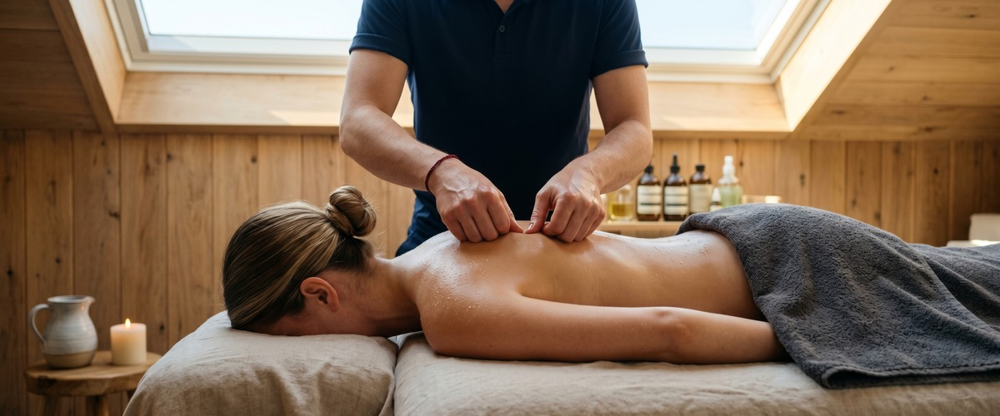
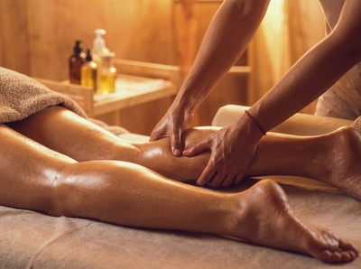
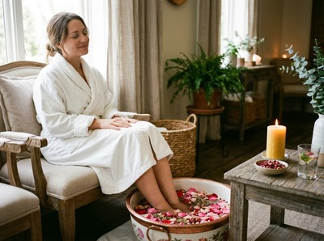

★★★★★ Quality gate failures: readability. Review and edit before removing this notice. ★★★★★
Sports massage has a bit of an image problem.

Say the words out loud and most people picture a professional footballer being worked on at the side of a pitch, or a marathon runner grimacing through a post-race rubdown. The truth is that the benefits of sports massage extend well beyond elite sport, and if you carry any physical tension from training, work, or daily life, the chances are your body would respond well to it. At Glasgow Thai Massage, our Thai sports massage is one of our most popular treatments, and we see clients ranging from competitive runners to desk workers whose hips have quietly seized up over the years.
One of the most well-established benefits of sports massage is its effect on recovery. After hard exercise, delayed onset muscle soreness (DOMS) usually peaks between 12 and 48 hours as your muscles repair small tears in the fibres.

A review of 29 studies published in BMJ Open Sport and Exercise Medicine found that post-exercise sports massage reduced DOMS symptoms by around 13%, helping athletes recover more quickly between sessions. That means less time on the sidelines and more time doing the work that builds fitness.
When soreness is shorter and less severe, you can train more often and with more consistency. You can book a session online after a tough training block and give your body the recovery support it deserves.
Sports massage helps increase blood flow to the treated muscles. The pressure applied during a session helps open up blood vessels, improving the delivery of oxygen and nutrients to muscle tissue while clearing out waste products that build up during exercise.
This is not just useful for recovery. Better circulation in tight muscle groups can reduce the background stiffness that many people accept as normal. If you have areas that always feel heavy or sluggish, improved blood flow to those tissues often makes a noticeable difference within a few sessions.
Tight muscles do not just feel uncomfortable — they limit movement in ways that slowly affect posture, gait, and performance. Sports massage tackles this by releasing tension in soft tissue and working on the connective tissue around muscle groups.
When combined with the assisted stretching that forms part of our Thai sports massage approach, the effect on range of motion can be significant. For runners, tight hip flexors, hamstrings, and IT bands are the norm rather than the exception.
Regular sports massage helps keep these areas working well. This reduces injury risk and the slow compensation patterns that lead to problems elsewhere in the body.
A good sports massage therapist does not just apply pressure — they assess the tissue they are working with. Areas of unusual tightness, limited movement, or early adhesions can be spotted during a session before they become an actual injury.
This is one of the less-discussed benefits of sports massage, but one of the most valuable — especially for people in regular training. Treating a tight soleus or a stiff thoracic spine during a routine session takes an hour. Ignoring it until it becomes a strain or stress fracture can cost you weeks or months of training.
Sports massage is not purely mechanical. The physical contact involved in manual therapy triggers a calming response in the nervous system, lowering cortisol levels and helping the body settle.
For athletes carrying a high training load — or anyone dealing with stress from work and daily life — this effect is real and worth having. Many clients report sleeping more deeply on the night after a session.
When the body is less tense and the nervous system has had a chance to slow down, sleep quality often improves. If you have been reading about the role cortisol plays in recovery and sleep, regular massage is one of the practical tools available to help manage it.

The name suggests otherwise, but sports massage works just as well for anyone dealing with repetitive strain, poor posture, or physically demanding work. Tradespeople, nurses, office workers with tight shoulders, and parents who carry small children all place real physical demands on their bodies.
Techniques like trigger point release, deep tissue work, and myofascial work address these patterns directly. It does not matter whether the cause was a gym session or a long shift.
If you have been putting up with a niggle that has not resolved on its own, or you train regularly but feel like your body never fully recovers, a sports massage is worth trying before the issue grows. Glasgow Thai Massage offers online booking for sports massage sessions in Glasgow city centre, with flexible appointment times to suit most schedules.
Sports massage uses specific techniques including trigger point therapy, deep tissue work, and assisted stretching. These are aimed at muscle and joint issues, recovery, and performance. A standard relaxation massage focuses on comfort and calm. Sports massage can be more intensive and often targets specific problem areas rather than offering a full-body relaxation experience. That said, it is not always painful, and a good therapist will work within your tolerance.
Not at all. Sports massage works just as well for people who carry tension from desk work, manual labour, or repetitive daily tasks. If you have areas of ongoing tightness, limited movement, or recurring discomfort, sports massage can help — whether you train regularly or not. The techniques are designed to address soft tissue issues, not just sports injuries.
It depends on your activity level and goals. Athletes in heavy training often benefit from sessions every two weeks. For general upkeep and stress relief, once a month is a good starting point. If you are dealing with a specific issue, more frequent sessions in the short term often produce faster results. Your therapist can advise based on what they find during your first session.
Sports massage can involve firm pressure, especially on areas of significant tension or trigger points. Most clients describe it as a useful discomfort rather than sharp pain. Talking to your therapist throughout is important. A skilled therapist adjusts pressure based on your feedback, and the sensation usually eases as the session goes on and the muscles begin to release.
For recovery, sports massage works best within 24 to 48 hours after a hard session or event. It is best to avoid deep massage in the 48 hours before a race or competition, as treatment can briefly increase muscle soreness. For upkeep and injury prevention, timing matters less. A session mid-week between hard training days is usually a practical choice.